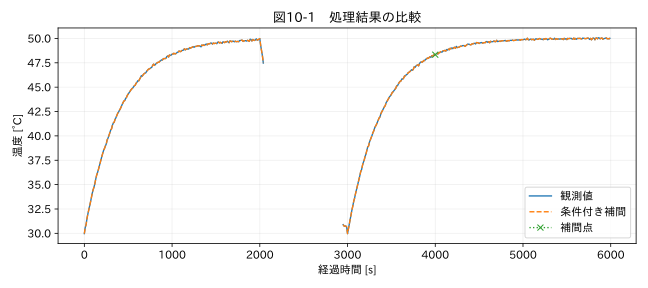

第III部 欠損値と異常値を扱う / 第10章
この章の節
欠損値の補完と補完してはいけない場面
学習目標
実時間、モード、周辺の品質に基づいて補間対象を選ぶ。長い区間の部分補完や外挿を防ぎ、補間誤差を検証して補間値を実測値と区別する。
10.1 補完の条件を先に書く
停止中の温度記録が欠けた。前後の温度を直線でつなぐときれいな曲線になるが、実際には停止中に冷え、再起動後に温まったかもしれない。両端が同じ温度でも、途中の現象は同じとは限らない。補間の可否は、見た目の滑らかさでは決められない。
本章では、前後に有効値があり、時刻が有効・一意・単調増加で、同じ連続運転区間に属し、前後の観測時刻の差が30秒以内、という条件を設定する。30秒は停止教材の演習値であり、温度一般の許容値ではない。実務では対象の時定数、必要な精度、イベントの時間幅から定める。
10.2 limitだけでは長い欠損を守れない
pandasの interpolate(limit=2) は、連続欠損が2点以下の区間だけを丸ごと埋める指定ではない。長い欠損の先頭側2点を埋めることがある。limit_direction='both' なら両側から埋まり、意図せず補間量が増える。R2 本書では連続欠損区間を先に取り出し、条件を満たした区間だけを全体として補間する。
さらに、欠損点数ではなく前後の有効観測間の時間を使う。1秒周期の2点欠損と、1時間周期の2点欠損では未知の時間幅が大きく違う。運転モードA→B→Aの両側がAでも、途中にBを挟むなら補間しない。連続するセグメントIDで区切る理由がここにある。
10.3 線形補間の誤差
滑らかな関数fを区間[a,b]で直線補間したとき、二階微分の絶対値がM以下なら、最大誤差の上限は M(b−a)²/8 となる。区間を2倍にすると、曲率による誤差上限は4倍になる。この評価は二階微分が存在し、その上限が分かる場合の話で、ステップ変化や未知のピークには使えない。
例えば曲率の上限を0.002 °C/s²と仮定すると、10秒区間の上限は0.025 °C、30秒では0.225 °Cになる。このMは演習用の仮定だ。実際にはセンサーのノイズや校正不確かさもあり、この式だけを全不確かさとしない。両端の誤差が相関している場合は、その共分散も関係する。
10.4 補間を検証する方法
欠損のない区間を意図的に隠し、補間値と観測値を比較する「隠し試験」ができる。隠す長さを1、2、5、10点と変え、定常・過渡・停止前後で別に誤差を集計する。ランダムに1点ずつ隠した試験だけでは、連続欠損に対する性能を評価できない。
模擬データなら真値との差も確認できるが、実データで隠した観測値にも測定誤差がある。RMSEが小さいという結果は、隠した条件に対する再現性を示すにとどまる。高温時にだけ発生する実欠損へ、低温定常区間の検証をそのまま適用しない。
関連する詳細実験は実践補講に掲載。入力形式・同期・補間・校正・多変量・チャンク境界を扱う。
実行するコードと結果
run.py · 共通処理の全ソース
教材フォルダで python examples/chapter10/run.py を実行。以下は省略のないスクリプト。共通モジュールは教材一式に含む。
from pathlib import Path
import sys
ROOT=Path(__file__).resolve().parents[2]
sys.path.insert(0,str(ROOT))
sys.path.insert(0,str(ROOT/'examples'))
import numpy as np
import pandas as pd
from common import load,truth,seconds,plot
from tsclean.core import numeric,timestamps,time_flags,hampel,freeze_candidates,interpolate_short,compare
df=load('07_modes');t=pd.to_datetime(df['時刻'],utc=True,format='ISO8601');x=df['測定値']
segments=df['mode'].ne(df['mode'].shift()).cumsum()
y,filled=interpolate_short(t,x,max_gap_seconds=30,groups=segments,eligible=df['mode'].eq('run'))
target=truth('07_modes').latent_signal
print('補間数:',int(filled.sum()),'残欠損:',int(y.isna().sum()))
print('模擬真値に対する補間点RMSE:',float(np.sqrt(np.mean((y[filled]-target[filled])**2))))
plot(10,seconds(df),{'観測値':x,'条件付き補間':y,'補間点':y.where(filled)},'温度 [°C]')
検証環境での実行結果を開く
補間数: 2 残欠損: 90
模擬真値に対する補間点RMSE: 0.020161750561444123

10.5 補間値の使い方
図10-1では、停止中の長い欠損が残り、運転中の短い2点だけが埋まる。補間値には interpolated の由来フラグを付ける。観測点と補間点を合わせて標本数を数え、精度が上がったと結論してはいけない。補間点は周辺の観測から作った値であり、独立な測定ではない。
最大値、しきい値超過時間、疲労損傷の評価は、未知区間に敏感である。短い欠損でも重要なピークを含む可能性があれば補間しない選択がある。平均トレンドの表示用には補間しても、合否判定用には観測値だけを使う、と用途別に列を分けることもできる。
演習
基礎演習
停止教材で補間された点数と、補間されずに残った欠損数を調べる。
応用演習
最大区間を20秒にすると短い欠損は埋まるか。2点欠損の両端の時刻差を計算する。
実務演習
圧力ピークの発生が予想される弁切替直後に0.2秒の欠損がある。前後は正常範囲だった。平均トレンドと最大圧力評価では、どう取り扱いを変えるか。
演習解答・解説を表示する
基礎：2点を補間し、停止中の90点は残す。原観測の列には92点の欠損がそのまま残る。
応用：周期10秒で2点欠損なら、両端間隔は30秒。20秒以内という規則では埋めない。
実務：表示用の参考線として補間するなら補間区間を明示する。最大圧力の確定には使用せず、その区間は評価不能とし、別系統の記録や再試験で補う。前後が正常という事実だけでは内部のピークを制約できない。
章末まとめ
補間は区間全体の条件で判断する。時間幅、モード、両端の品質、解析目的を揃え、実測と推定を分けて保存する。